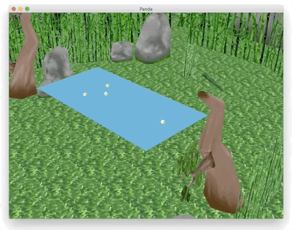
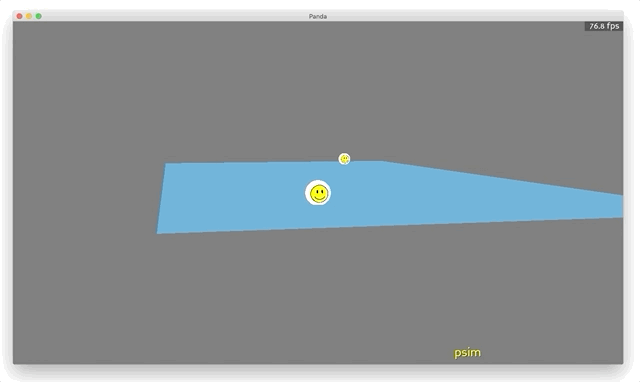
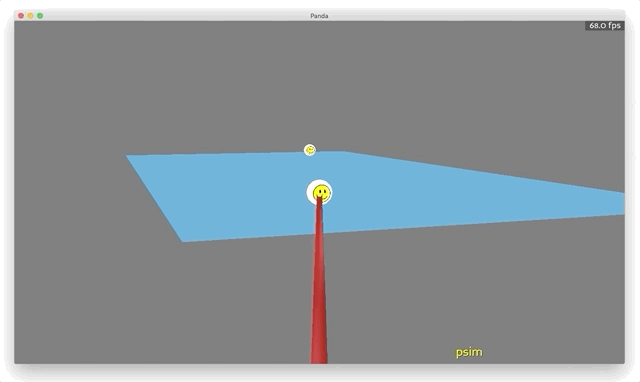
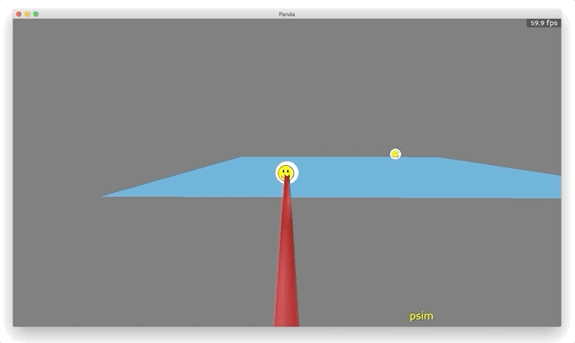
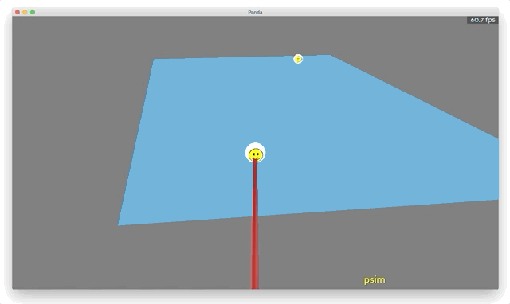

Pooltool is now an open source billiards video game rendered in 3D
Goal
In the last post I implemented a prototype that visualizes shots with pygame. But my plans are much more ambitious than visualizing shots on a pixel-art table. My goal is to turn this simulation into an interactive, 3D game/tool. That's what this post is about.

My credentials for making a game
None.
Game engine selection
If I was a game developer, I would have written this in C# or C++, using Unity or Unreal Engine as my game engine. But I'm not, so I decided to use a game engine with Python support.
It turns out, there is only 1 option that deserves consideration: panda3d. Fortunately, it's by no means a bad option. Originally developed by Disney, it was the game engine for the critically acclaimed ToonTown (among a few other titles), and then they later open-sourced it in a collaboration with Carnegie Mellon University for the purposes of using it as an educational tool.
Today, panda3d is a fully-featured, open-source game engine that remains under active development. It has good documentation and a relatively small, yet charitable and welcoming community. I must say, I feel a small sense of home every time I visit the Discourse and in general, I've had a wonderful time using panda3d so far.
Getting something going
After successfully completing the panda3d tutorial, I had created somewhat of a masterpiece:

But Michelangelo didn't stop painting after he completed the Sistine Chapel. After some time, I managed to squeeze a pool table into the scene.

The animation is the wrong speed, there is no camera controls, and the balls are rendered as little smiley faces. Nevertheless, pooltool is officially 3D.
Next, I started working on a mouse-based camera system. To orient the camera based on mouse movements, I needed to track mouse movements. To no one's surprise, panda3D has a mouse-watcher object called mouseWatcherNode that can query the mouse's current position. So I wrote a class called Mouse that uses mouseWatcherNode and a ClockObject to track changes in mouse movement over time:
class Mouse(ClockObject):
def __init__(self):
ClockObject.__init__(self)
self.mouse = base.mouseWatcherNode
self.tracking = False
@staticmethod
def hide():
props = WindowProperties()
props.setCursorHidden(True)
base.win.requestProperties(props)
@staticmethod
def show():
props = WindowProperties()
props.setCursorHidden(False)
base.win.requestProperties(props)
def track(self):
if not self.tracking and self.mouse.hasMouse():
self.last_x, self.last_y = self.get_xy()
self.last_t = self.getFrameTime()
self.tracking = True
def get_x(self, update=True):
x = self.mouse.getMouseX()
if update:
self.last_x = x
self.last_t = self.getFrameTime()
return x
def get_y(self, update=True):
y = self.mouse.getMouseY()
if update:
self.last_y = y
self.last_t = self.getFrameTime()
return y
def get_xy(self, update=True):
x, y = self.get_x(update=False), self.get_y(update=False)
if update:
self.last_x = x
self.last_y = y
self.last_t = self.getFrameTime()
return x, y
def get_dx(self, update=True):
last_x = self.last_x
return self.get_x(update=update) - last_x
def get_dy(self, update=True):
last_y = self.last_y
return self.get_y(update=update) - last_y
The most important methods in this class are get_dx and get_dy which return how far and in what direction the mouse has moved since last queried.
Next I setup a task called update_camera that's called every single frame. update_camera gets the change in mouse position by calling get_dx and get_dy and then associates changes in mouse position with changes in the camera's position relative to a focal point.
def update_camera(self):
if self.keymap[action.fine_control]:
fx, fy = 2, 0
else:
fx, fy = 10, 3
alpha_x = self.dummy.getH() - fx * self.mouse.get_dx()
alpha_y = max(min(0, self.dummy.getR() + fy * self.mouse.get_dy()), -45)
self.dummy.setH(alpha_x) # Move view laterally
self.dummy.setR(alpha_y) # Move view vertically
Here it is in action.

Next, I added a cue stick that follows the camera's orientation:

I also added the ability to stroke the cue by holding 's' and moving the mouse up and down:

Just like in real pool where you often walk around the table to check out the angles, the camera shouldn't be pinned to a single ball. So when you hold down 'v', you can around the table. And by holding down left-click, you can zoom in or out with the mouse:

Robust, object-oriented design
If I keep moving at this speed the codebase is going to turn into spaghetti. I need to start carving out a modular, object-oriented code structure.
(I) Mode management
The first problem I noticed is that tasks are not being properly managed.
A task is just a method that's called each frame. For example, update_camera shown above was a task that controlled camera movement with the mouse. If you wanted, you could flatten the code complexity and have just a single task carries out all your desired functionality. For example, here's a task that accomplishes all of the above functionality:
def master_task(self, task):
self.update_camera_rotation()
self.update_camera_pan()
self.update_camera_zoom()
self.update_stroke_position()
return task.cont
This task delegates to respective methods and all is good. Except, depending on different scenarios, the mouse should do different things. Holding 's', it should control the cue's displacment; holding 'left-click', it should zoom the camera; holding 'v', it should pan the camera, etc. Yet in the above example, it does all of these things simultaneously. Let's be a little more careful:
def master_task(self, task):
if self.keymap['v']:
self.update_camera_pan()
elif self.keymap['left-click']:
self.update_camera_zoom()
elif self.keymap['s']:
self.update_stroke_position()
else:
self.update_camera_rotation()
return task.cont
Good, now what if I want to allow panning and zooming at the same time?
def master_task(self, task):
if self.keymap['v'] and self.keymap['left-click']:
self.update_camera_pan()
self.update_camera_zoom()
elif self.keymap['v']:
self.update_camera_pan()
elif self.keymap['left-click']:
self.update_camera_zoom()
elif self.keymap['s']:
self.update_stroke_position()
else:
self.update_camera_rotation()
return task.cont
The logic is becoming more branched and complex, and the game barely does anything. Further down this ill-conceived design, this method is going to start blowing up with nested conditionals. So my solution was to define game modes.
A game mode, or mode for short, represents a state that the game can be in. For example, the menu system is a mode. Aiming the cue stick is a mode. Viewing a shot is a mode. All modes manage their own tasks, that turn on and off depending on which mode is active. Whenever the game switches modes, an exit method is called for the current mode that tears down all of the current tasks, rendered objects, etc., and then an enter method is called for the next mode that builds up all of the new tasks, rendered objects, etc.
All modes inherit from this simple base class:
from abc import ABC, abstractmethod
class Mode(ABC):
keymap = None
def __init__(self):
if self.keymap is None:
raise NotImplementedError("Child classes of Mode must have 'keymap' attribute")
@abstractmethod
def enter(self):
pass
@abstractmethod
def exit(self):
pass
Mode inherits from ABC (from the abstract class library abc) that offers some defensive coding relating to inheritance. For example, any and all modes must possess enter and exit methods, and the @abstractmethod decorator ensures that. So an inheriting class without enter and exit methods can't instantiate without error:
class NewMode(Mode):
pass
NewMode()
TypeError: Can't instantiate abstract class NewMode with abstract methods enter, exit
The solution is to define enter and exit methods:
class NewMode(Mode):
def enter(self): pass
def exit(self): pass
NewMode()
Some more defensive coding: each mode must possess a dictionary called keymap that defines actions and whether or not they are active. By defining keymap as a class attribute and setting it to None, and then complaining in the __init__ if keymap is None, it is ensured that any inheriting class will fail object instantiation unless it explicitly defines its keymap:
class NewMode(Mode):
def enter(self): pass
def exit(self): pass
NewMode()
NotImplementedError: Child classes of Mode must have 'keymap' attribute
The solution is to define a keymap either as a class attribute or instance attribute
class NewMode(Mode):
keymap = {'zoom': False}
def enter(self): pass
def exit(self): pass
NewMode()
Here is a currently implemented game mode, ViewMode. This refers to the mode in which the player possesses a free-form camera that can be rotated, panned, and zoomed.

class ViewMode(CameraMode):
keymap = {
action.aim: False, # rotate camera
action.move: True, # pan the camera
action.quit: False, # exit to menu
action.zoom: False, # zoom the camera
}
def enter(self):
self.mouse.hide()
self.mouse.relative()
self.mouse.track()
self.task_action('escape', action.quit, True)
self.task_action('mouse1', action.zoom, True)
self.task_action('mouse1-up', action.zoom, False)
self.task_action('a', action.aim, True)
self.task_action('v', action.move, True)
self.task_action('v-up', action.move, False)
self.add_task(self.view_task, 'view_task')
self.add_task(self.quit_task, 'quit_task')
def exit(self):
self.remove_task('view_task')
self.remove_task('quit_task')
def view_task(self, task):
if self.keymap[action.aim]:
self.change_mode('aim')
elif self.keymap[action.zoom]:
self.zoom_camera()
elif self.keymap[action.move]:
self.move_camera()
else:
self.rotate_camera(cue_stick_too=False)
return task.cont
def quit_task(self, task):
if self.keymap[action.quit]:
self.keymap[action.quit] = False
self.change_mode('menu')
self.close_scene()
return task.cont
def zoom_camera(self):
with self.mouse:
s = -self.mouse.get_dy()*0.3
self.cam.node.setPos(autils.multiply_cw(self.cam.node.getPos(), 1-s))
def move_camera(self):
with self.mouse:
dxp, dyp = self.mouse.get_dx(), self.mouse.get_dy()
h = self.cam.focus.getH() * np.pi/180 + np.pi/2
dx = dxp * np.cos(h) - dyp * np.sin(h)
dy = dxp * np.sin(h) + dyp * np.cos(h)
f = 0.6
self.cam.focus.setX(self.cam.focus.getX() + dx*f)
self.cam.focus.setY(self.cam.focus.getY() + dy*f)
def rotate_camera(self):
if self.keymap[action.fine_control]:
fx, fy = 2, 0
else:
fx, fy = 13, 3
with self.mouse:
alpha_x = self.cam.focus.getH() - fx * self.mouse.get_dx()
alpha_y = max(min(0, self.cam.focus.getR() + fy * self.mouse.get_dy()), -90)
self.cam.focus.setH(alpha_x) # Move view laterally
self.cam.focus.setR(alpha_y) # Move view vertically
From the keymap you can see there are 4 different actions that this mode supports
keymap = {
action.aim: False, # rotate camera
action.move: True, # pan the camera
action.quit: False, # exit to menu
action.zoom: False, # zoom the camera
}
Whenever this mode is entered, enter is called:
def enter(self):
self.mouse.hide()
self.mouse.relative()
self.mouse.track()
self.task_action('escape', action.quit, True)
self.task_action('mouse1', action.zoom, True)
self.task_action('mouse1-up', action.zoom, False)
self.task_action('a', action.aim, True)
self.task_action('v', action.move, True)
self.task_action('v-up', action.move, False)
self.add_task(self.view_task, 'view_task')
self.add_task(self.quit_task, 'quit_task')
So what happens when enter is called? First, some changes to the mouse are made. The mouse is made invisible, and set to a relative mode where the cursor is repositioned to the center of the screen so it never moves out of the game window. Then, mouse tracking is turned on so changes in movement can be associated to camera movements. Next, the actions in keymap are explicitly associated to mouse/keyboard inputs. Upon defining these key-bindings, the values in keymap will be set to True or False every frame depending on which keys are being pressed.
And finally, 2 tasks called view_task and quit_task are added to a panda3d built-in task manager. If you look at the guts of view_task and quit_task, you'll see they carry out operations depending on which keys are being pressed.
Whenever this mode is exited, exit is called:
def exit(self):
self.remove_task('view_task')
self.remove_task('quit_task')
Quite simply, the two tasks that were added to the task manager in enter are removed from the task manager in exit.
In total, I currently have 5 game modes which can be found in the pooltool.ani.modes module.
To manage switching between modes and reliably carrying out build-up and tear-down operations, I wrote a ModeManager:
class ModeManager(MenuMode, AimMode, StrokeMode, ViewMode, ShotMode):
def __init__(self):
# Init every Mode class
MenuMode.__init__(self)
AimMode.__init__(self)
StrokeMode.__init__(self)
ViewMode.__init__(self)
ShotMode.__init__(self)
self.modes = {
'menu': MenuMode,
'aim': AimMode,
'stroke': StrokeMode,
'view': ViewMode,
'shot': ShotMode,
}
# Store each classes current keymap as its default
self.action_state_defaults = {}
for mode in self.modes:
self.action_state_defaults[mode] = {}
for a, default_state in self.modes[mode].keymap.items():
self.action_state_defaults[mode][a] = default_state
self.mode = None
self.keymap = None
def update_keymap(self, action_name, action_state):
self.keymap[action_name] = action_state
def task_action(self, keystroke, action_name, action_state):
"""Add action to keymap to be handled by tasks"""
self.accept(keystroke, self.update_keymap, [action_name, action_state])
def change_mode(self, mode, exit_kwargs={}, enter_kwargs={}):
assert mode in self.modes
self.end_mode(**exit_kwargs)
# Build up operations for the new mode
self.mode = mode
self.keymap = self.modes[mode].keymap
self.modes[mode].enter(self, **enter_kwargs)
def end_mode(self, **kwargs):
# Stop watching actions related to mode
self.ignoreAll()
# Tear down operations for the current mode
if self.mode is not None:
self.modes[self.mode].exit(self, **kwargs)
self.reset_action_states()
def reset_action_states(self):
for key in self.keymap:
self.keymap[key] = self.action_state_defaults[self.mode][key]
change_mode changes modes by carrying out build-up and tear-down operations for the respective modes. Because ModeManager inherits all of the modes, methods in modes can call change_mode to facilitate mode switching. For example, the quit_task method in ViewMode changes the mode to MenuMode by calling self.change_mode('menu').
def quit_task(self, task):
if self.keymap[action.quit]:
self.keymap[action.quit] = False
self.change_mode('menu')
self.close_scene()
return task.cont
(II) The inheritance diagram
Me from the future, here. pooltool is no longer based on the following inheritance diagram, which as I've progressed as a developer, I've come to realize is strife with a lack of cohesion and an overabundance of coupling. One day I looked at the code and realized everything was spaghetti. Since this initial design, I've learned a lot about python software design, and have started favoring composition over inheritance and making heavy use of some more modern python features like dataclasses. I spent about a month completely refactoring the code, and I'm happy to say it's in a much better place. All this is to say, don't model anything after the following inheritance diagram.
So that's how mode management works. This is how ModeManagement fits into the inheritance diagram for the game:

Red lines show the direction of inheritance (e.g. ViewMode inherits from Mode) and blue lines indicates composition (e.g. Interface makes an instances of Table). On the right hand side are all of the objects like Table, Cue, and Ball. Each of these inherit from a base class Object, and further inherit from respective Render classes that contain all logic relating to rendering procedures. By packaging this rendering responsibility into separate classes, objects remain fully operational for non-rendered circumstances.
The class that glues everything together is Interface, which inherits from ModeManager, and therefore can switch between game modes. It also holds instances of Table, Cue, and Ball objects, which brings these objects into the namespace of tasks setup by the game modes. This is critical because it enables tasks to create, modify, and destroy objects and their rendered states based off of user action.
Taking a shot
With a thoughtful design in place, its time to simulate shots. From the last post, I already know the simulator works, its just a matter of detecting when and how hard the player's cue strikes the cue ball. The player gains control of the cue whenever they hold down 's', which activates the StrokeMode class.
To detect if the player hit the ball, I setup a task in StrokeMode that checks whether the cue's position is negative, which implies the cue stick moves through (intersects) the cue ball. If this happens, an impact velocity is determined from a trajectory of the cue stick's position, and self.change_mode('shot') is called which changes the mode to ShotMode.
ShotMode.enter calls ShotMode.run_simulation in a parallel process that begins the simulation. While this takes place, a translucent overlay is put onto the screen to indicate that the shot is being calculated. Since run_simulation is called in a parallel process, the player retains control over the camera while the shot's being calculated.
Once done, the simulation animation is played on a loop.

Cushions
It looks kind of ugly how the balls bounce off invisible walls, so I modified TableRender to render the edges of cushion segments:

It's not much better, but at least now I can start to visually sketch out the pockets. So I flipped back to when I drew this diagram for the algorithmic theory post:

Then, I modified Table.__init__ by hardcoding in these cushion segment dimensions, which resulted in something that actually takes the appearance of a pocket billiards table:

It's awesome to see that I'm now at a point where the game is starting to be actually fun to play. For now I'll ignore that the balls don't fall into pockets. There is actually a much more pressing issue. Check this out this bug:

After a little while I realized there was a gap in the detection boundary of the cushion that existed near the intersection of the two cushion segments. This figure explains the situation:

Figure 1. A depiction of the bug. Blue lines represent the edge of the cushion segments, and red lines show where the center of the ball (purple) must pass in order for a collision (the collision segments). The left-hand side shows what has led to the bug, and the right-hand side illustrates the solution: to add a circular cushion segment.
The figure illustrates, in red, where the center of the ball must cross in order for a collision to occur. However, the current implementation (on the left-hand side), has a clear gap that leads to the behavior observed. The solution is to explicitly define a circular cushion segment at the intersection between the linear cushion segments, as shown on the right-hand side.
Ok, so I need to introduce the concept of a circular cushion segment, which I started toying around with here:

The circular segment in the middle of the table exists as an attribute of Table, and is properly rendered, but I haven't written the code to predict ball collisions with circular cushions. I have worked out a similar situation though, during my theoretical treatment of the ball-pocket collision, so I'm going to reuse that math... Essentially, one must solve a 4th order polynomial to determine if/when a ball collides with a circular cushion segment.
Well, this was surprisingly straight forward. I'd encourage you to check out the associated commit:

It's kind of amazing, and easy to forget, that this is not a discretely evolved system. All of these collisions are predicted ahead of time.

With circular cushion segments now fully operational, I added circular segments (with 0 radius) to each of the cushion corners via the prescription shown in Figure 1. This patches up the gap in the collision segment depicted in Figure 1. The result is a properly behaving edge case:

Pockets
The elephant in the room is that there's no pockets for the balls to fall into. Let's change that.

Alright pockets exist and are rendered, but they do not yet interact with the balls. For this, I need to implement a collision event I have previously theorized: the ball-pocket collision. Here is the class I came up with:
class BallPocketCollision(Collision):
event_type = type_ball_pocket
def __init__(self, ball, pocket, t=None):
self.state_start = ball.s
self.state_end = pooltool.pocketed
Collision.__init__(self, body1=ball, body2=pocket, t=t)
def resolve(self):
ball, pocket = self.agents
# Ball is placed at the pocket center
rvw = np.array([[pocket.a, pocket.b, -pocket.depth],
[0, 0, 0 ],
[0, 0, 0 ],
[0, 0, 0 ]])
ball.set(rvw, self.state_end)
ball.update_next_transition_event()
pocket.add(ball.id)
BallPocketCollision inherits from Collision, which is a base class I had written for several of the other collision events. Collision doesn't do much, but it does force all inheriting classes to define a resolve method, which I've done above. Resolving this collision is very easy. I update the ball's rvw state vectors so that the ball has no spin, linear velocity, or angular velocity, and then place the ball at the bottom of the pocket. For good measure, I add the ball's ID to the pocket, so that I can track which balls are in which pockets.
So now the concept of a ball-pocket collision exists. But I need to be able to predict when they happen, like I do for all of the other events. Fortunately I've already developed the [math]({{ site.url }}/2020/12/20/pooltool-alg/#-ball-pocket-collision-times), which amounts to solving a 4th order polynomial. I implemented this algebra in physics.get_ball_pocket_collision_time.
Besides that, I just had to add a routine to evolution.EvolveShotEventBased.get_next_event that considers all ball-pocket pairs and returns the ball-pocket collision that occurs in the least amount of time (this time may in fact be , which basically means you suck at pool):
def get_min_ball_pocket_event_time(self):
"""Returns minimum time until next ball-pocket collision"""
dtau_E_min = np.inf
involved_agents = tuple([DummyBall(), NonObject()])
for ball in self.balls.values():
if ball.s in pooltool.nontranslating:
continue
for pocket in self.table.pockets.values():
dtau_E = physics.get_ball_pocket_collision_time(
rvw=ball.rvw,
s=ball.s,
a=pocket.a,
b=pocket.b,
r=pocket.radius,
mu=(ball.u_s if ball.s == pooltool.sliding else ball.u_r),
m=ball.m,
g=ball.g,
R=ball.R
)
if dtau_E < dtau_E_min:
involved_agents = (ball, pocket)
dtau_E_min = dtau_E
dtau_E = dtau_E_min
return BallPocketCollision(*involved_agents, t=(self.t + dtau_E))
Here is the end result:

For now, the ball suddenly appears at the bottom of the pocket rather than falling into the pocket naturally. I'll have to do something about that in the future. Perhaps a prebaked animation.
Because I already had a strong class framework for events, adding pockets was easy. If you want to check out just how easy it was, check out the pull request.
From interaction to game
At this point, all the major mechanics are laid out. But what's missing is the extra fluff that turns this interactive experience into an actual game. Currently there is nothing to facilitate games like 8-ball or 9-ball. No rules to tell you whether you scratched the ball, what the win condition is, whose turn it is, and so on.
Well I decided I would end this blog post by filling in all of that fluff, which ended up in this huge PR. Now, pooltool is a primitively functioning game, with a menu, a heads-up display, different game modes, winners and losers, etc. I decided to summarize the current state of affairs in this feature video:
Rendered in 3D pooltool Devlog 1 Youtube Video
Next up
Next on the agenda is a graphics overhaul. See you then.